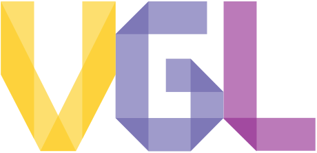
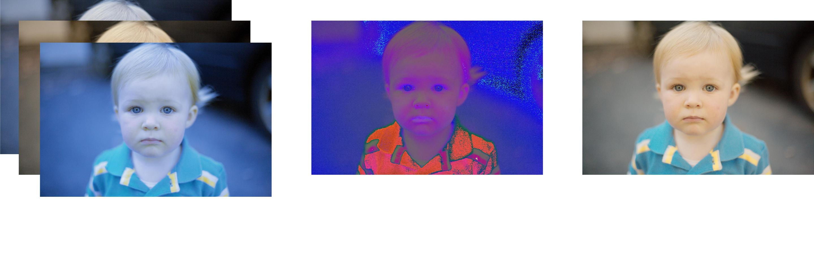
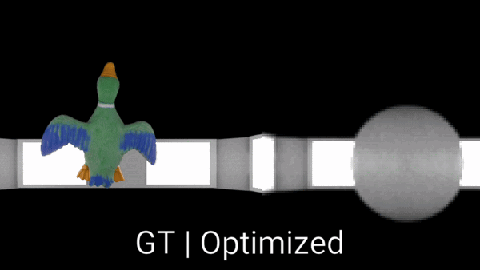
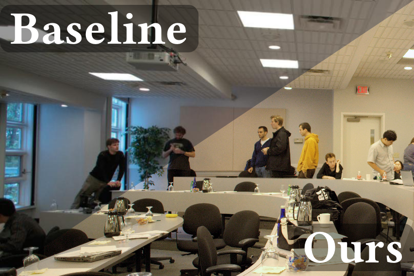
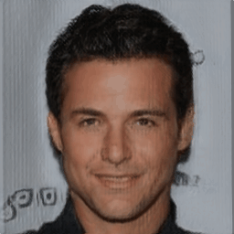

Doğa Yılmaz
I am a PhD student at University College London (UCL), part of the VECG group, under the supervision of Prof. He Wang. My research focuses on Computer Graphics and Computational Physics, particularly in advancing physics-informed neural rendering techniques.
Education
PhD in Computer Science
University College London
Department of Computer Science
Supervisor: Assoc. Prof. He Wang
October 2024 - Present
University College London
Department of Computer Science
Supervisor: Assoc. Prof. He Wang
October 2024 - Present
MSc in Artificial Intelligence
Özyeğin University
Graduate School of Science and Engineering
Supervisor: Assoc. Prof. Furkan Kıraç
February 2021 - October 2023
Özyeğin University
Graduate School of Science and Engineering
Supervisor: Assoc. Prof. Furkan Kıraç
February 2021 - October 2023
BSc in Computer Science
Özyeğin University
Department of Computer Science
Supervisor: Assoc. Prof. Furkan Kıraç
September 2016 - September 2020
Özyeğin University
Department of Computer Science
Supervisor: Assoc. Prof. Furkan Kıraç
September 2016 - September 2020
Experience
R&D Software Engineer
Fishency Innovation
Stavanger, Norway
Manager: Furkan Kıraç
August 2022 - Present
Fishency Innovation
Stavanger, Norway
Manager: Furkan Kıraç
August 2022 - Present

Research Intern
UCL Computational Light Laboratory (CLL)
London, UK
Supervisor: Assoc. Prof. Kaan Akşit
November 2023 - Present
UCL Computational Light Laboratory (CLL)
London, UK
Supervisor: Assoc. Prof. Kaan Akşit
November 2023 - Present

Research & Teaching Assistant
Özyeğin University Vision and Graphics Laboratory (VGL)
Istanbul, Turkey
Supervisor: Assoc. Prof. Furkan Kıraç
July 2019 - October 2023
Özyeğin University Vision and Graphics Laboratory (VGL)
Istanbul, Turkey
Supervisor: Assoc. Prof. Furkan Kıraç
July 2019 - October 2023
Publications

DeNIM:
Deterministic Neural Illuminant Mapping for Efficient Auto-White Balance Correction
Furkan Kınlı, Doğa Yılmaz, Barış Özcan, Furkan Kıraç
IEEE ICCV Workshop on Resource Efficient Deep Learning for Computer Vision, 2023
Furkan Kınlı, Doğa Yılmaz, Barış Özcan, Furkan Kıraç
IEEE ICCV Workshop on Resource Efficient Deep Learning for Computer Vision, 2023

Illumination-guided
inverse rendering benchmark: Learning real objects with few cameras
Doğa Yılmaz, Furkan Kıraç
Computers & Graphics, 115, 107-121
Doğa Yılmaz, Furkan Kıraç
Computers & Graphics, 115, 107-121

Modeling
the Lighting in Scenes as Style for Auto White-Balance Correction
Furkan Kınlı, Doğa Yılmaz, Barış Özcan, Furkan Kıraç
IEEE/CVF Winter Conference on Applications of Computer Vision (WACV), 2023
Furkan Kınlı, Doğa Yılmaz, Barış Özcan, Furkan Kıraç
IEEE/CVF Winter Conference on Applications of Computer Vision (WACV), 2023

[Re] Lifting 2D StyleGAN for 3D-Aware Face
Generation
Doğa Yılmaz, Furkan Kınlı, Barış Özcan, Furkan Kıraç
ReScience C, 8(2), 2022, Presented at NeurIPS 2022 Journal Track
Doğa Yılmaz, Furkan Kınlı, Barış Özcan, Furkan Kıraç
ReScience C, 8(2), 2022, Presented at NeurIPS 2022 Journal Track